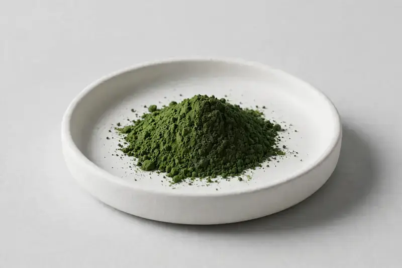

Moringa oleifera — a nutrient-dense leaf extract supporting superfood, capsule and green-blend formulations.

Overview
Moringa Leaf Extract comes from Moringa oleifera leaf and is widely traded as a superfood ingredient, with polyphenol-standardized and ratio extracts both common. Demand continues across green powders, capsules and functional drinks. HerbChina Extracts is a Xi'an-based trading company sourcing through vetted partner producers, confirming ratio or marker options against your target specification before order.
Specifications below reflect commonly requested options in the market — not a stock list. Share your target spec and we'll confirm exactly what we can supply, honestly.
| Specification | Details |
|---|---|
| Botanical identity | Moringa oleifera, leaf |
| Marker compound | Polyphenols — commonly requested: 5-20% (UV); ratio extracts — commonly requested: 4:1 to 20:1 |
| Appearance | Green to dark green fine powder |
| Analytical methods | Methods referenced in buyer specifications: UV |
| Mesh size | Typically 80–100 mesh (confirm per inquiry) |
| Testing | COA/TDS arranged on request; scope agreed per your spec |
Applications
Documentation
We don't claim in-house labs or certifications we don't hold. COA and TDS documents can be arranged on request, and testing scope is agreed against your specification before supply.
FAQ
Related products
Moringa oleifera
Key marker: Behenic Acid
View specs →Panax ginseng
Key marker: Ginsenosides
View specs →Curcuma longa
Key marker: Curcuminoids
View specs →Berberis aristata
Key marker: Berberine
View specs →Hibiscus sabdariffa
Key marker: Anthocyanins
View specs →Rosmarinus officinalis
Key marker: Carnosic Acid
View specs →Buyer guides
Buyer’s guide
Identity, actives, heavy metals, micro — what each section of a Certificate of Analysis means, and the red flags that tell you to walk away.
Read the guide →Buyer’s guide
Section-by-section COA walkthrough — marker assays, heavy metals, micro panels, red flags, and a buyer checklist.
Read the guide →Send your target spec and volumes — we'll respond with a tailored quotation.
Request a Quote